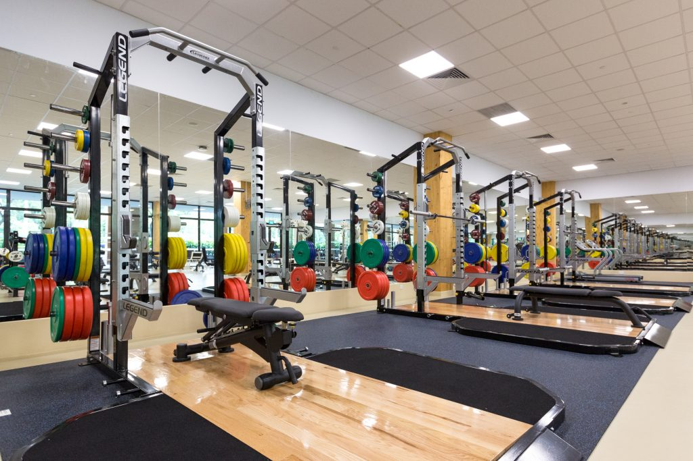

The Athletes' Gym is specially built for varsity athletes and the serious fitness enthusiasts in NTU. It is located at the new sports complex at The Wave. Due to the size of the Athletes' Gym, only a maximum of 30 users can be allowed in the gym at any one time.

The gym comprises various strength & conditioning equipment such as:
Power platform
Cable cross machine
Dumbbells
Flat and Incline bench press machine
Leg extension machine
Leg press machine
Hamstring curl machine
Kettle bells
Slam balls
Rehabilitation equipment are available as well, such as: